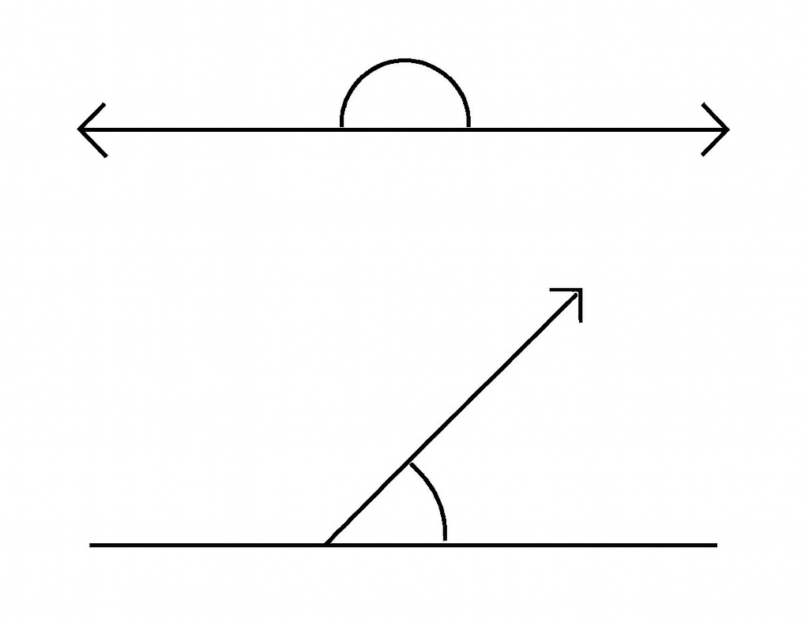
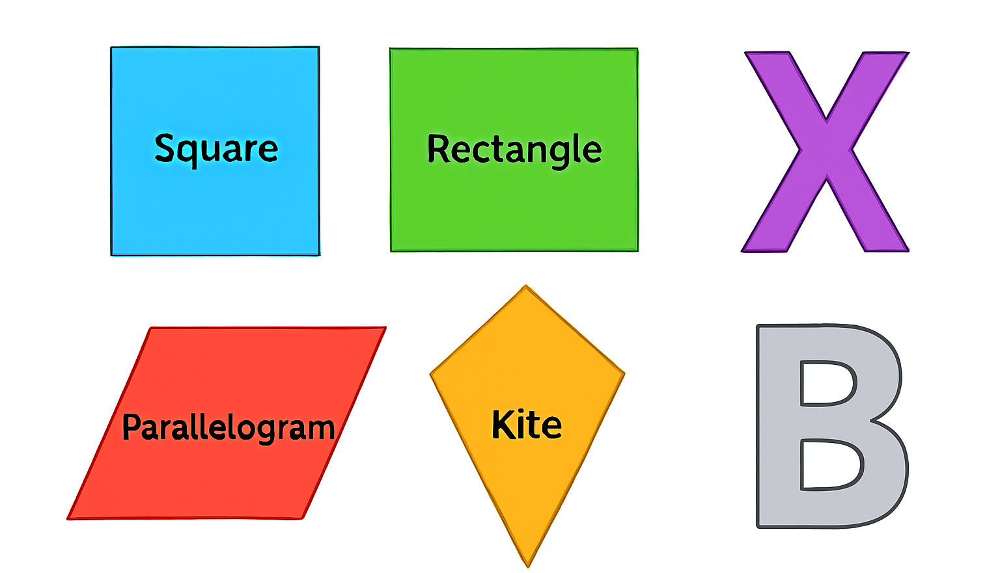
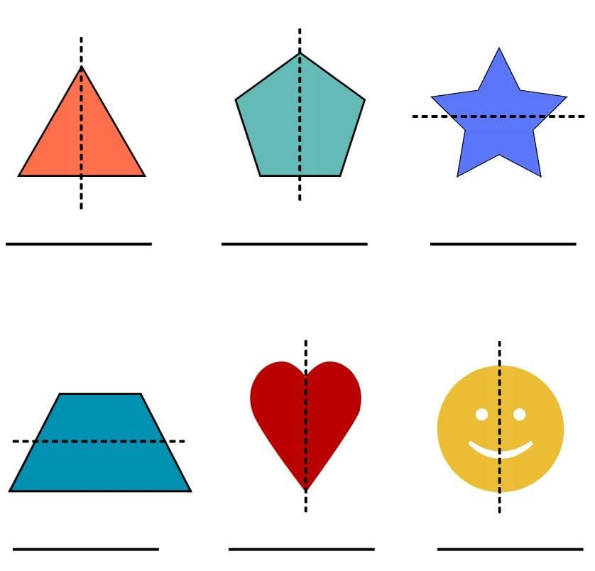
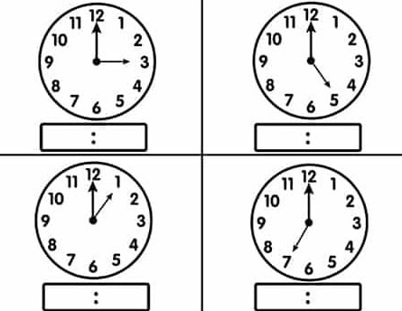
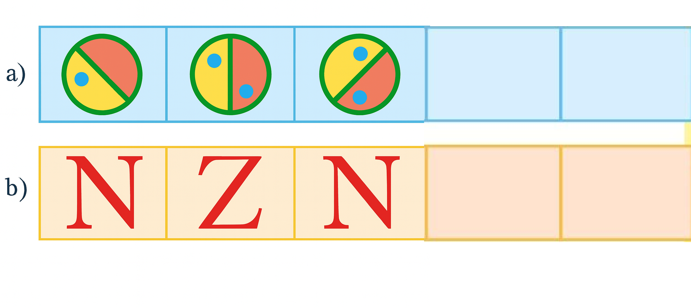
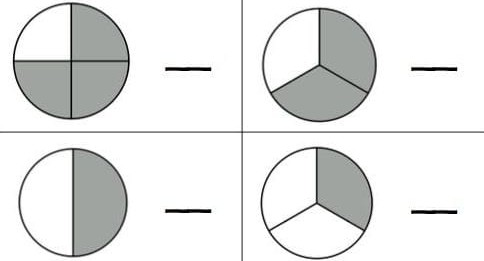

Section – A (Answer the following questions)[10]
a) The greatest four-digit number is ____________. [1]
b) An angle less than 180° and more than 90° is called ____________. [1]
c) Find the place value and face value of 4 in 65421.
[2]
Place value: ____________ Face value: ____________
d) What is the Roman numeral of 25 and 500? 25 = ____________ , 500 =
____________ [2]
e) The length of a boundary is called ____________. [1]
f) The point where two arms of an angle meet is known as ____________. [1]
g) 3/5 + 2/5 ____________. [1]
h) Area of a rectangle = ____________. [2]
Section – B[14]
Q1) Find the sum: 4,26,315 + 2,87,429. [1]
Q2) Write the factor of 12 by factor tree. [1]
Q3) A shopkeeper sells 45 pencils for ₹270. Find the cost of one pencil. [1]
Q4) Subtract: 3,256,924 − 165,297. [1]
Q5) Find the area of a square whose side is 15 cm. [1]
Q6) Write two English letters that have a horizontal line of symmetry only. [1]
Q7) Number names:
[2]
(a) 4,25,690 → ____________________________________
(b) 68,25,922 → ____________________________________
Q8) Write the name of the angle shown (straight / right / obtuse / acute / complete).
[2]

Q9) Arrange in ascending order.
[2]
(a) 2/3, 4/3, 1/3, 6/3
(b) 8/16, 8/13, 8/7, 8/20, 8/11
Q10) Make the smallest and the greatest number using the digits 6, 9, 8, 1 (without
repetition).
[2]
Greatest: ____________ Smallest: ____________
Section – C[20]
Q1) Write the type of each angle from the list (Acute, Right, Straight, Obtuse,
Complete).
[2.5]
a) 30° – ____________
b) 90° – ____________
c) 180° – ____________
d) 360° – ____________
e) 125° – ____________
Q2) Write the 10 multiples of 9. [2.5]
Q3) 1 km = ____________ m. [1]
Q4) Find the LCM of 12, 14 and 16. [2]
Q5) A library has 40,235 English books and 30,250 Hindi books. How many books are there in
total? [2]
Q6) Find quotient and remainder.
[4]
(a) 259246 ÷ 7 → Q = ______ , R = ______
(b) 477897 ÷ 5 → Q = ______ , R = ______
Q7) Subtract the sum of 2502 and 9262 from 56871. [2]
Q8) Multiply:
[4]
(a) 26,590 × 36
(b) 96,234 × 28
Section – D[Marks as indicated]
Q1) Draw the symmetrical line(s) on each figure.
[6]

Q2) State which of the following shapes are symmetrical or asymmetrical.
[6]

Q3) Write the time and the angle name (acute/right/obtuse/straight) for each clock.
[4]

Clock 1: Time ____________ , Angle ____________
Clock 2: Time ____________ , Angle ____________
Clock 3: Time ____________ , Angle ____________
Clock 4: Time ____________ , Angle ____________
Q4) Find the area and perimeter of the given rectangles.
[4]
(i) Square of side 6 cm – Area = ______ cm², Perimeter = ______ cm
(ii) Rectangle of length 9 cm and breadth 2 cm – Area = ______ cm², Perimeter = ______
cm
Q5) Complete the pattern.
[2]

Q6) What is the fraction of the shaded part in each circle?
[2]

Q7) Convert into mixed fractions.
[2]
(a) 35/10 = ____________________
(b) 24/5 = ____________________
Q8) Convert into improper fractions.
[2]
(a) 11 1/2 = ____________________
(b) 9 2/5 = ____________________
Q9) Find any two equivalent fractions of:
[2]
(a) 4/5 = ____________ , ____________
(b) 6/4 = ____________ , ____________
Q10) Make any three shape of your choice and show its one-fourth (1/4) turn and half
(1/2) turn.
[6]